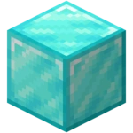
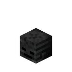

Utilisation
L'Étoile du Nether est un objet rare et puissant dans Minecraft. Elle est principalement utilisée pour créer des blocs de balises, qui offrent divers effets bénéfiques dans la zone d'influence de la balise. Il est également utilisée dans plusieurs craft de SimpleCraft.
Crafting
|  |  |
|
|
 | |
|
Achivement :
Historique de Version
- 4.1 : Craft de l'étoile du nether ajouté au jeu.